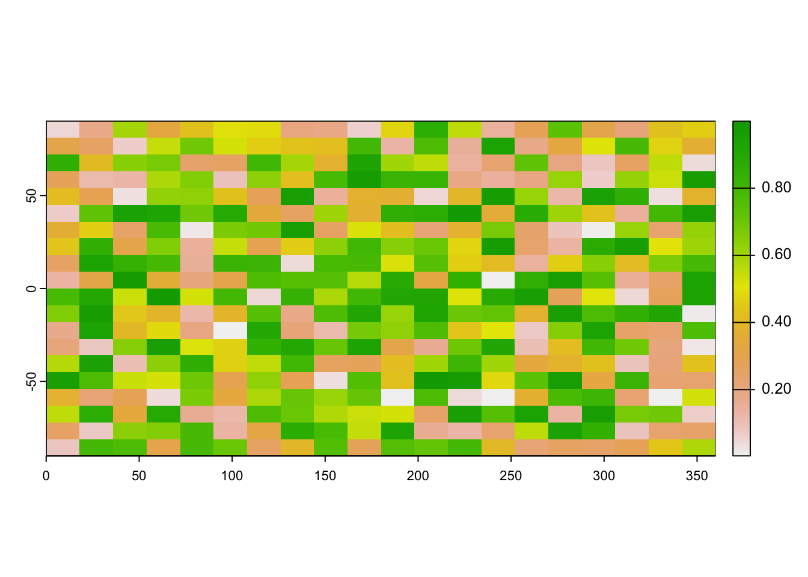

Chapter 1 Introduction to spatial data in R
Learning Objectives
- Read table with geo coordinates into
sfobject- Read shapefiles into
sfobject- Examine
sfobjects- Use base plot with
sfobjects and attribute data- Read GeoTiff single and multiband into a
SpatRasterobject- Examine
SpatRasterobjects
1.1 The sf package
The sf1 package was first released on CRAN in late October 2016, and has in the mean time superseded the original R Package for storing and manipulating spatial data, sp, which was first released in 2005. sp is still actively maintained, but less often used now, so you should be aware of it, but we will not teach it here.
Figure 1.1: sf vs sp downloads on CRAN
sf implements a formal standard called “Simple Features” that specifies a storage and access model of spatial geometries (point, line, polygon). A feature geometry is called simple when it consists of points connected by straight line pieces, and does not intersect itself. This standard has been adopted widely, not only by spatial databases such as PostGIS, but also more recent standards such as GeoJSON.
If you work with PostGis or GeoJSON you may have come across the WKT (well-known text) format (Fig 1.1 and 1.2)

Figure 1.2: Well-Known-Text Geometry primitives (wikipedia)

Figure 1.3: Well-Known-Text Multipart geometries (wikipedia)
sf implements this standard natively in R. In sf spatial objects are stored as a tabular format (data frame) with a special column that contains the information for the geometry coordinates. That special column holds a list with the same length as the number of rows in the data frame. Each of the individual list elements then can be of any length needed to hold the coordinates that correspond to an individual feature.
sf objects are built up using the following structures:
sfg- simple feature geometry (one feature)sfc- simple feature collection (a collection ofsfg)sf- simple feature object (sfcwith data attributes)
So to create a spatial sf object manually the basic steps would be:
I. Create geometric objects (topology)
Geometric objects (simple features) can be created from a numeric vector, matrix or a list with the coordinates. They are called sfg objects for Simple Feature Geometry.b There are functions that help create simple feature geometries, like st_point(), st_linestring(), st_polygon() and more.
II. Combine all individual single feature objects for the special column.
The feature geometries are then combined into a Simple Feature Collection with st_sfc(). which is nothing other than a simple feature geometry list-column. The sfc object also holds the bounding box and the projection information.
III. Add attributes.
Lastly, we add the attributes to the the simple feature collection with the st_sf() function. This function extends the well known data frame in R with a column that holds the simple feature collection.
To create a network of highways we would first generate LINESTRINGs as simple feature geometries out of a matrix with coordinates:
lnstr_sfg1 <- st_linestring(matrix(runif(6), ncol=2))
lnstr_sfg2 <- st_linestring(matrix(runif(6), ncol=2))
class(lnstr_sfg1)#> [1] "XY" "LINESTRING" "sfg"We would then combine this into a simple feature collection :
#> Geometry set for 2 features
#> Geometry type: LINESTRING
#> Dimension: XY
#> Bounding box: xmin: 0.05845885 ymin: 0.07983237 xmax: 0.9347772 ymax: 0.9139652
#> CRS: NA#> LINESTRING (0.1177288 0.3211188, 0.254328 0.862...#> LINESTRING (0.9347772 0.4617314, 0.5862836 0.07...And lastly create a data frame from above to generate the sf object:
dfr <- data.frame(id = c("hwy1", "hwy2"),
cars_per_hour = c(78, 22))
(lnstr_sf <- st_sf(dfr , lnstr_sfc))#> Simple feature collection with 2 features and 2 fields
#> Geometry type: LINESTRING
#> Dimension: XY
#> Bounding box: xmin: 0.05845885 ymin: 0.07983237 xmax: 0.9347772 ymax: 0.9139652
#> CRS: NA
#> id cars_per_hour lnstr_sfc
#> 1 hwy1 78 LINESTRING (0.1177288 0.321...
#> 2 hwy2 22 LINESTRING (0.9347772 0.461...There are many methods available in the sf package, to find out use
#> [1] [ [[<-
#> [3] [<- $<-
#> [5] aggregate anti_join
#> [7] arrange as.data.frame
#> [9] cbind coerce
#> [11] crs dbDataType
#> [13] dbWriteTable distance
#> [15] distinct dplyr_reconstruct
#> [17] drop_na duplicated
#> [19] ext extract
#> [21] filter full_join
#> [23] gather group_by
#> [25] group_split identify
#> [27] initialize inner_join
#> [29] left_join lines
#> [31] mask merge
#> [33] mutate nest
#> [35] pivot_longer pivot_wider
#> [37] plot points
#> [39] polys print
#> [41] rasterize rbind
#> [43] rename_with rename
#> [45] right_join rowwise
#> [47] sample_frac sample_n
#> [49] select semi_join
#> [51] separate_rows separate
#> [53] show slice
#> [55] slotsFromS3 spread
#> [57] st_agr st_agr<-
#> [59] st_area st_as_s2
#> [61] st_as_sf st_as_sfc
#> [63] st_bbox st_boundary
#> [65] st_break_antimeridian st_buffer
#> [67] st_cast st_centroid
#> [69] st_collection_extract st_concave_hull
#> [71] st_convex_hull st_coordinates
#> [73] st_crop st_crs
#> [75] st_crs<- st_difference
#> [77] st_drop_geometry st_filter
#> [79] st_geometry st_geometry<-
#> [81] st_inscribed_circle st_interpolate_aw
#> [83] st_intersection st_intersects
#> [85] st_is_valid st_is
#> [87] st_join st_line_merge
#> [89] st_m_range st_make_valid
#> [91] st_minimum_rotated_rectangle st_nearest_points
#> [93] st_node st_normalize
#> [95] st_point_on_surface st_polygonize
#> [97] st_precision st_reverse
#> [99] st_sample st_segmentize
#> [101] st_set_precision st_shift_longitude
#> [103] st_simplify st_snap
#> [105] st_sym_difference st_transform
#> [107] st_triangulate_constrained st_triangulate
#> [109] st_union st_voronoi
#> [111] st_wrap_dateline st_write
#> [113] st_z_range st_zm
#> [115] summarise svc
#> [117] transform transmute
#> [119] ungroup unite
#> [121] unnest vect
#> see '?methods' for accessing help and source codeHere are some of the other highlights of sf you might be interested in:
- provides fast I/O, particularly relevant for large files
- spatial functions that rely on GEOS and GDAL and PROJ external libraries are directly linked into the package, so no need to load additional external packages (like in
sp) sfobjects can be plotted directly withggplotsfdirectly reads from and writes to spatial databases such as PostGISsfis compatible with thetidyvderseapproach, (but see some pitfalls here)
Note that sp and sf are not the only way spatial objects are conceptualized in R. Other spatial packages may use their own class definitions for spatial data (for example spatstat).
There are packages specifically for the GeoJSON and for that reason are more lightweight, for example geojson
Usually you can find functions that convert objects to and from these formats.
Challenge
Generate an
sfpoint object.
- Create a matrix
ptsof random numbers with two columns and as many rows as you like. These are your points.- Create a dataframe
attrib_dfwith the same number of rows as yourptsmatrix and a column that holds an attribute. You can make up any attribute.- Use the appropriate commands and
ptsansfobject with a gemoetry column of classsfc_POINT.- Try to subset your spatial object using the attribute you have added and the way you are used to from regular data frames.
- How do you determine the bounding box of your spatial object?
1.2 Creating a spatial object from a lat/lon table
Often in your research might have a spreadsheet that contains latitude, longitude and perhaps some attribute values. You know how to read the spreadsheet into a tabular format (tibble) with dplyr::read_table or dplyr::read_csv. We can then very easily convert the table into a spatial object in R.
An sf object can be created from a data frame in the following way. We take advantage of the st_as_sf() function which converts any foreign object into an sf object. Similarly to above, it requires an argument coords, which in the case of point data needs to be a vector that specifies the data frame’s columns for the longitude and latitude (x,y) coordinates.
my_sf_object <- st_as_sf(myDataframe, coords)st_as_sf() creates a new object and leaves the original data frame untouched.
We use read_csv() to read philly_homicides.csv into a tibble in R and name it philly_homicides_df.
#> Rows: 3883 Columns: 10
#> ── Column specification ────────────────────────────────────────────────────────
#> Delimiter: ","
#> chr (3): SECTOR, LOCATION_BLOCK, TEXT_GENERAL_CODE
#> dbl (5): DC_DIST, UCR_GENERAL, OBJ_ID, POINT_X, POINT_Y
#> date (1): DISPATCH_DATE
#> time (1): DISPATCH_TIME
#>
#> ℹ Use `spec()` to retrieve the full column specification for this data.
#> ℹ Specify the column types or set `show_col_types = FALSE` to quiet this message.We convert the philly_homicides_df data frame into an sf object with st_as_sf()
library(sf)
philly_homicides_sf <- st_as_sf(philly_homicides_df, coords = c("POINT_X", "POINT_Y"))
names(philly_homicides_sf)#> [1] "DC_DIST" "SECTOR" "DISPATCH_DATE"
#> [4] "DISPATCH_TIME" "LOCATION_BLOCK" "UCR_GENERAL"
#> [7] "OBJ_ID" "TEXT_GENERAL_CODE" "geometry"Note the additional geometry list-column which now holds the simple feature collection with the coordinates of all the points. We now use st_crs() to check on the projection.
#> Coordinate Reference System: NATo make it a complete geographical object we use st_crs() to assign the WGS84 projection, which has the EPSG code 4326:
#> Coordinate Reference System:
#> User input: EPSG:4326
#> wkt:
#> GEOGCRS["WGS 84",
#> ENSEMBLE["World Geodetic System 1984 ensemble",
#> MEMBER["World Geodetic System 1984 (Transit)"],
#> MEMBER["World Geodetic System 1984 (G730)"],
#> MEMBER["World Geodetic System 1984 (G873)"],
#> MEMBER["World Geodetic System 1984 (G1150)"],
#> MEMBER["World Geodetic System 1984 (G1674)"],
#> MEMBER["World Geodetic System 1984 (G1762)"],
#> MEMBER["World Geodetic System 1984 (G2139)"],
#> ELLIPSOID["WGS 84",6378137,298.257223563,
#> LENGTHUNIT["metre",1]],
#> ENSEMBLEACCURACY[2.0]],
#> PRIMEM["Greenwich",0,
#> ANGLEUNIT["degree",0.0174532925199433]],
#> CS[ellipsoidal,2],
#> AXIS["geodetic latitude (Lat)",north,
#> ORDER[1],
#> ANGLEUNIT["degree",0.0174532925199433]],
#> AXIS["geodetic longitude (Lon)",east,
#> ORDER[2],
#> ANGLEUNIT["degree",0.0174532925199433]],
#> USAGE[
#> SCOPE["Horizontal component of 3D system."],
#> AREA["World."],
#> BBOX[-90,-180,90,180]],
#> ID["EPSG",4326]]Wow this is long. It is usually more helpful to just retrieve the proj4string:
#> [1] "+proj=longlat +datum=WGS84 +no_defs"We will save this object as a shapefile on our hard drive for later use. (Note that by default st_write checks if the file already exists, and if so it will not overwrite it. If you need to force it to overwrite use the option delete_layer = TRUE.)
1.3 Loading shape files into R
sf relies on the powerful GDAL library, which is automatically linked in when loading sf. The GDAL provides the functionality to read and write spatial files of many formats. For shape files we can use st_read(), which simply takes the path of the directory with the shapefile as argument.
#> Reading layer `PhillyTotalPopHHinc' from data source
#> `/Users/cengel/Anthro/R_Class/R_Workshops/R-spatial/data/Philly'
#> using driver `ESRI Shapefile'
#> Simple feature collection with 384 features and 17 fields
#> Geometry type: MULTIPOLYGON
#> Dimension: XY
#> Bounding box: xmin: 1739497 ymin: 457343.7 xmax: 1764030 ymax: 490544.9
#> Projected CRS: Albers#> Classes 'sf' and 'data.frame': 384 obs. of 18 variables:
#> $ STATEFP10 : chr "42" "42" "42" "42" ...
#> $ COUNTYFP10: chr "101" "101" "101" "101" ...
#> $ TRACTCE10 : chr "036301" "036400" "036600" "034803" ...
#> $ GEOID10 : num 4.21e+10 4.21e+10 4.21e+10 4.21e+10 4.21e+10 ...
#> $ NAME10 : chr "363.01" "364" "366" "348.03" ...
#> $ NAMELSAD10: chr "Census Tract 363.01" "Census Tract 364" "Census Tract 366" "Census Tract 348.03" ...
#> $ MTFCC10 : chr "G5020" "G5020" "G5020" "G5020" ...
#> $ FUNCSTAT10: chr "S" "S" "S" "S" ...
#> $ ALAND10 : num 2322732 4501110 1004313 1271533 1016206 ...
#> $ AWATER10 : num 66075 8014 1426278 8021 0 ...
#> $ INTPTLAT10: chr "+40.0895349" "+40.1127747" "+39.9470272" "+40.0619427" ...
#> $ INTPTLON10: chr "-074.9667387" "-074.9789137" "-075.1404472" "-075.0023705" ...
#> $ GISJOIN : chr "G4201010036301" "G4201010036400" "G4201010036600" "G4201010034803" ...
#> $ Shape_area: num 2388806 4509124 2430591 1279556 1016207 ...
#> $ Shape_len : num 6851 10567 9257 4928 5920 ...
#> $ medHHinc : num 54569 NA 130139 56667 69981 ...
#> $ totalPop : num 3695 703 1643 4390 3807 ...
#> $ geometry :sfc_MULTIPOLYGON of length 384; first list element: List of 1
#> ..$ :List of 1
#> .. ..$ : num [1:55, 1:2] 1763647 1763473 1763366 1763378 1763321 ...
#> ..- attr(*, "class")= chr [1:3] "XY" "MULTIPOLYGON" "sfg"
#> - attr(*, "sf_column")= chr "geometry"
#> - attr(*, "agr")= Factor w/ 3 levels "constant","aggregate",..: NA NA NA NA NA NA NA NA NA NA ...
#> ..- attr(*, "names")= chr [1:17] "STATEFP10" "COUNTYFP10" "TRACTCE10" "GEOID10" ...Two more words about the geometry column: Though it is not recommended, you can name this column any way you wish. Secondly, you can remove this column and revert to a regular, non-spatial data frame at any dime with st_drop_geometry().
The default plot of an sf object is a multi-plot of the first attributes, with a warning if not all can be plotted:
#> Warning: plotting the first 10 out of 17 attributes; use max.plot = 17 to plot
#> all
In order to only plot the polygon boundaries we need to directly use the geometry column. We use the st_geometry() function. It extracts the sfc object (the simple feature geometry list column):

Let’s add a subset of polygons with only the census tracts where the median houshold income (medHHinc) is more than $60,000. We can extract elements from an sf object based on attributes using the dplyr filter function (base R subsetting also works) and add the census tracts to the plot in a different color.
1.4 Raster data in R
Raster files, as you might know, have a more compact data structure than vectors. Because of their regular structure the coordinates do not need to be recorded for each pixel or cell in the rectangular extent. A raster is defined by:
- a CRS
- coordinates of its origin
- a distance or cell size in each direction
- a dimension or numbers of cells in each direction
- an array of cell values
Given this structure, coordinates for any cell can be computed and don’t need to be stored.
terra was first released in 2020 and now replaces the raster package which was first released in 2010. terra has greater functionality, is faster and easier to use.

Figure 1.4: raster vs terra downloads on CRAN
The terra package has functions for creating, reading, manipulating, and writing raster data. The package also implements raster algebra and many other functions for raster data manipulation.
The package works with SpatRaster objects. The rast() function is used to create these objects. For example, to create a raster object from scratch we would do the following:
library(terra)
r <- rast(nrows=20, ncols=20, # number of cells in x and y dimension
xmin=0, xmax=360) # min and max x coordinates (left-right borders)
r#> class : SpatRaster
#> dimensions : 20, 20, 1 (nrow, ncol, nlyr)
#> resolution : 18, 9 (x, y)
#> extent : 0, 360, -90, 90 (xmin, xmax, ymin, ymax)
#> coord. ref. : lon/lat WGS 84From the output above we know that:
- the object is of class
SpatRaster - its dimensions are 20x20 cells
- it has one layer (band)
- the extent of the raster
- it has a CRS defined! If the crs argument is missing when creating the SpatRaster object, if the x coordinates are within -360 and 360 and the y coordinates are within -90 and 90, the WGS84 projection is used by default.
Good to know.
There are functions to look at individual properties of the raster object. For examle for the number of cells:
#> [1] 400Or we can retrieve just the number of bands using the nlyr() function.
#> [1] 1We can also find out about the Coordinate Reference System (CRS) with the crs function. The default output looks a little messy:
#> [1] "GEOGCRS[\"WGS 84\",\n DATUM[\"World Geodetic System 1984\",\n ELLIPSOID[\"WGS 84\",6378137,298.257223563,\n LENGTHUNIT[\"metre\",1]],\n ID[\"EPSG\",6326]],\n PRIMEM[\"Greenwich\",0,\n ANGLEUNIT[\"degree\",0.0174532925199433],\n ID[\"EPSG\",8901]],\n CS[ellipsoidal,2],\n AXIS[\"longitude\",east,\n ORDER[1],\n ANGLEUNIT[\"degree\",0.0174532925199433,\n ID[\"EPSG\",9122]]],\n AXIS[\"latitude\",north,\n ORDER[2],\n ANGLEUNIT[\"degree\",0.0174532925199433,\n ID[\"EPSG\",9122]]]]"We can make this easier to read by setting the proj argument:
#> [1] "+proj=longlat +datum=WGS84 +no_defs"Let’s try and plot this.
The canvas is empty! This is because even though we have a layer, the cells do not have any values.
To add some random values to the cells we can take advantage of the ncells() function and do this:
#> class : SpatRaster
#> dimensions : 20, 20, 1 (nrow, ncol, nlyr)
#> resolution : 18, 9 (x, y)
#> extent : 0, 360, -90, 90 (xmin, xmax, ymin, ymax)
#> coord. ref. : lon/lat WGS 84
#> source(s) : memory
#> name : lyr.1
#> min value : 0.005382989
#> max value : 0.999929903In addition to the output above, we now see:
- the source, which indicates where the cell values are stored (here they are in memory)
- the range of the cell values (min value adn max value) now added.
- the name, of the layer which is by default lyr.1.
This now plots successfully:

(The rasterVis package provides a set of methods for enhanced visualization and interaction for more advanced plotting of raster objects.)
SpatRaster objects can also be created from a matrix.
#> [1] "matrix" "array"#> [1] "SpatRaster"
#> attr(,"package")
#> [1] "terra"We also use the rast() function to read in a raster file. This raster is generated as part of the NEON Harvard Forest field site.
Typing the name of the object will give us what’s in there:
#> class : SpatRaster
#> dimensions : 2317, 3073, 3 (nrow, ncol, nlyr)
#> resolution : 0.25, 0.25 (x, y)
#> extent : 731998.5, 732766.8, 4712956, 4713536 (xmin, xmax, ymin, ymax)
#> coord. ref. : WGS 84 / UTM zone 18N (EPSG:32618)
#> source : HARV_RGB_Ortho.tif
#> names : HARV_RGB_Ortho_1, HARV_RGB_Ortho_2, HARV_RGB_Ortho_3
#> min values : 0, 0, 0
#> max values : 255, 255, 255Challenge
Based on the output above answer the following questions:
- How many bands?
- What are the names of the bands)?
- Where are the cell values stored?
- What is the CRS?
We can plot the object like this:

Or to plot a single band:
We can also use the rast() function to import one single band:

Let’s now explore the distribution of values contained within our raster using the hist() function which produces a histogram. Histograms are often useful in identifying outliers and bad data values in our raster data.
#> Warning: [hist] a sample of 14% of the cells was used
#> Warning: [hist] a sample of 14% of the cells was used
#> Warning: [hist] a sample of 14% of the cells was used
Notice that a warning message is produced when R creates the histogram. By default the maximum cells processed per band is 1,000,000. This maximum value is to ensure processing efficiency as our data become larger. We can force the hist function to use all cell values.
#> [1] 7120141
At times it may be useful to explore raster metadata before loading them into R. This can be done with the function describe()
#> [1] "Driver: GTiff/GeoTIFF"
#> [2] "Files: data/HARV_RGB_Ortho.tif"
#> [3] "Size is 3073, 2317"
#> [4] "Coordinate System is:"
#> [5] "PROJCRS[\"WGS 84 / UTM zone 18N\","
#> [6] " BASEGEOGCRS[\"WGS 84\","
#> [7] " DATUM[\"World Geodetic System 1984\","
#> [8] " ELLIPSOID[\"WGS 84\",6378137,298.257223563,"
#> [9] " LENGTHUNIT[\"metre\",1]]],"
#> [10] " PRIMEM[\"Greenwich\",0,"
#> [11] " ANGLEUNIT[\"degree\",0.0174532925199433]],"
#> [12] " ID[\"EPSG\",4326]],"
#> [13] " CONVERSION[\"UTM zone 18N\","
#> [14] " METHOD[\"Transverse Mercator\","
#> [15] " ID[\"EPSG\",9807]],"
#> [16] " PARAMETER[\"Latitude of natural origin\",0,"
#> [17] " ANGLEUNIT[\"degree\",0.0174532925199433],"
#> [18] " ID[\"EPSG\",8801]],"
#> [19] " PARAMETER[\"Longitude of natural origin\",-75,"
#> [20] " ANGLEUNIT[\"degree\",0.0174532925199433],"
#> [21] " ID[\"EPSG\",8802]],"
#> [22] " PARAMETER[\"Scale factor at natural origin\",0.9996,"
#> [23] " SCALEUNIT[\"unity\",1],"
#> [24] " ID[\"EPSG\",8805]],"
#> [25] " PARAMETER[\"False easting\",500000,"
#> [26] " LENGTHUNIT[\"metre\",1],"
#> [27] " ID[\"EPSG\",8806]],"
#> [28] " PARAMETER[\"False northing\",0,"
#> [29] " LENGTHUNIT[\"metre\",1],"
#> [30] " ID[\"EPSG\",8807]]],"
#> [31] " CS[Cartesian,2],"
#> [32] " AXIS[\"(E)\",east,"
#> [33] " ORDER[1],"
#> [34] " LENGTHUNIT[\"metre\",1]],"
#> [35] " AXIS[\"(N)\",north,"
#> [36] " ORDER[2],"
#> [37] " LENGTHUNIT[\"metre\",1]],"
#> [38] " USAGE["
#> [39] " SCOPE[\"Engineering survey, topographic mapping.\"],"
#> [40] " AREA[\"Between 78°W and 72°W, northern hemisphere between equator and 84°N, onshore and offshore. Bahamas. Canada - Nunavut; Ontario; Quebec. Colombia. Cuba. Ecuador. Greenland. Haiti. Jamaica. Panama. Turks and Caicos Islands. United States (USA). Venezuela.\"],"
#> [41] " BBOX[0,-78,84,-72]],"
#> [42] " ID[\"EPSG\",32618]]"
#> [43] "Data axis to CRS axis mapping: 1,2"
#> [44] "Origin = (731998.500000000000000,4713535.500000000000000)"
#> [45] "Pixel Size = (0.250000000000000,-0.250000000000000)"
#> [46] "Metadata:"
#> [47] " AREA_OR_POINT=Area"
#> [48] "Image Structure Metadata:"
#> [49] " COMPRESSION=LZW"
#> [50] " INTERLEAVE=PIXEL"
#> [51] "Corner Coordinates:"
#> [52] "Upper Left ( 731998.500, 4713535.500) ( 72d10'29.27\"W, 42d32'21.80\"N)"
#> [53] "Lower Left ( 731998.500, 4712956.250) ( 72d10'30.11\"W, 42d32' 3.04\"N)"
#> [54] "Upper Right ( 732766.750, 4713535.500) ( 72d 9'55.63\"W, 42d32'20.97\"N)"
#> [55] "Lower Right ( 732766.750, 4712956.250) ( 72d 9'56.48\"W, 42d32' 2.21\"N)"
#> [56] "Center ( 732382.625, 4713245.875) ( 72d10'12.87\"W, 42d32'12.00\"N)"
#> [57] "Band 1 Block=3073x1 Type=Float64, ColorInterp=Gray"
#> [58] " Min=0.000 Max=255.000 "
#> [59] " Minimum=0.000, Maximum=255.000, Mean=nan, StdDev=nan"
#> [60] " NoData Value=-1.7e+308"
#> [61] " Metadata:"
#> [62] " STATISTICS_MAXIMUM=255"
#> [63] " STATISTICS_MEAN=nan"
#> [64] " STATISTICS_MINIMUM=0"
#> [65] " STATISTICS_STDDEV=nan"
#> [66] "Band 2 Block=3073x1 Type=Float64, ColorInterp=Undefined"
#> [67] " Min=0.000 Max=255.000 "
#> [68] " Minimum=0.000, Maximum=255.000, Mean=nan, StdDev=nan"
#> [69] " NoData Value=-1.7e+308"
#> [70] " Metadata:"
#> [71] " STATISTICS_MAXIMUM=255"
#> [72] " STATISTICS_MEAN=nan"
#> [73] " STATISTICS_MINIMUM=0"
#> [74] " STATISTICS_STDDEV=nan"
#> [75] "Band 3 Block=3073x1 Type=Float64, ColorInterp=Undefined"
#> [76] " Min=0.000 Max=255.000 "
#> [77] " Minimum=0.000, Maximum=255.000, Mean=nan, StdDev=nan"
#> [78] " NoData Value=-1.7e+308"
#> [79] " Metadata:"
#> [80] " STATISTICS_MAXIMUM=255"
#> [81] " STATISTICS_MEAN=nan"
#> [82] " STATISTICS_MINIMUM=0"
#> [83] " STATISTICS_STDDEV=nan"For the many functions available for working with such an object see:
#> [1] ! [ [[
#> [4] [[<- [<- %in%
#> [7] $ $<- activeCat
#> [10] activeCat<- add<- addCats
#> [13] adjacent aggregate align
#> [16] all.equal allNA animate
#> [19] anyNA app approximate
#> [22] area Arith as.array
#> [25] as.bool as.character as.contour
#> [28] as.data.frame as.factor as.int
#> [31] as.integer as.lines as.list
#> [34] as.logical as.matrix as.numeric
#> [37] as.points as.polygons as.raster
#> [40] atan_2 atan2 autocor
#> [43] barplot blocks boundaries
#> [46] boxplot buffer c
#> [49] catalyze categories cats
#> [52] cellFromRowCol cellFromRowColCombine cellFromXY
#> [55] cells cellSize clamp_ts
#> [58] clamp classify click
#> [61] coerce colFromCell colFromX
#> [64] colorize coltab coltab<-
#> [67] Compare compare compareGeom
#> [70] concats contour costDist
#> [73] countNA cover crds
#> [76] crop crosstab crs
#> [79] crs<- datatype deepcopy
#> [82] density depth depth<-
#> [85] diff dim dim<-
#> [88] direction disagg distance
#> [91] droplevels expanse ext
#> [94] ext<- extend extract
#> [97] extractRange fillTime flip
#> [100] focal focal3D focalCor
#> [103] focalCpp focalPairs focalReg
#> [106] focalValues freq getTileExtents
#> [109] global gridDist gridDistance
#> [112] has.colors has.RGB has.time
#> [115] hasMinMax hasValues head
#> [118] hist identical ifel
#> [121] image init inMemory
#> [124] inset interpIDW interpNear
#> [127] interpolate intersect is.bool
#> [130] is.factor is.finite is.infinite
#> [133] is.int is.lonlat is.na
#> [136] is.nan is.related is.rotated
#> [139] isFALSE isTRUE k_means
#> [142] lapp layerCor levels
#> [145] levels<- linearUnits lines
#> [148] log Logic logic
#> [151] longnames longnames<- makeTiles
#> [154] mask match math
#> [157] Math Math2 mean
#> [160] median merge meta
#> [163] metags metags<- minmax
#> [166] modal mosaic NAflag
#> [169] NAflag<- names names<-
#> [172] ncell ncol ncol<-
#> [175] nlyr nlyr<- noNA
#> [178] not.na nrow nrow<-
#> [181] nsrc origin origin<-
#> [184] pairs panel patches
#> [187] persp plet plot
#> [190] plotRGB points polys
#> [193] prcomp predict princomp
#> [196] project quantile rangeFill
#> [199] rapp rast rasterize
#> [202] rasterizeGeom rasterizeWin rcl
#> [205] readStart readStop readValues
#> [208] rectify regress relate
#> [211] rep res res<-
#> [214] resample rescale rev
#> [217] RGB RGB<- roll
#> [220] rotate rowColCombine rowColFromCell
#> [223] rowFromCell rowFromY sapp
#> [226] saveRDS scale scoff
#> [229] scoff<- sds segregate
#> [232] sel selectHighest selectRange
#> [235] serialize set.cats set.crs
#> [238] set.ext set.names set.RGB
#> [241] set.values setMinMax setValues
#> [244] shift show sieve
#> [247] size sort sources
#> [250] spatSample split sprc
#> [253] st_bbox st_crs stdev
#> [256] str stretch subset
#> [259] subst summary Summary
#> [262] t tail tapp
#> [265] terrain text tighten
#> [268] time time<- timeInfo
#> [271] trans trim unique
#> [274] units units<- update
#> [277] values values<- varnames
#> [280] varnames<- viewshed weighted.mean
#> [283] where.max where.min which.lyr
#> [286] which.max which.min window
#> [289] window<- wrap wrapCache
#> [292] writeCDF writeRaster writeStart
#> [295] writeStop writeValues xapp
#> [298] xFromCell xFromCol xmax
#> [301] xmax<- xmin xmin<-
#> [304] xres xyFromCell yFromCell
#> [307] yFromRow ymax ymax<-
#> [310] ymin ymin<- yres
#> [313] zonal zoom
#> see '?methods' for accessing help and source codeE. Pebesma & R. Bivand (2016)Spatial data in R: simple features and future perspectives↩︎